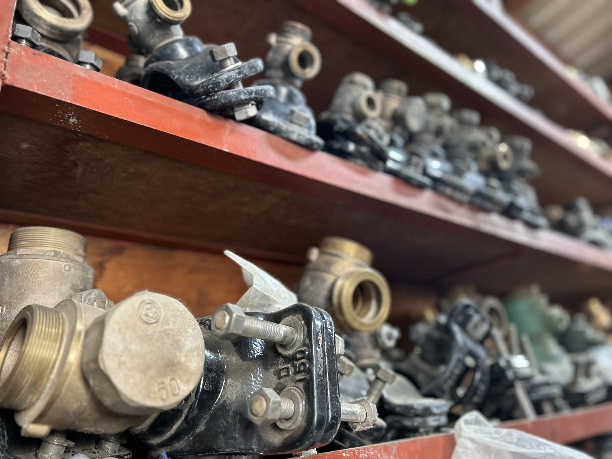
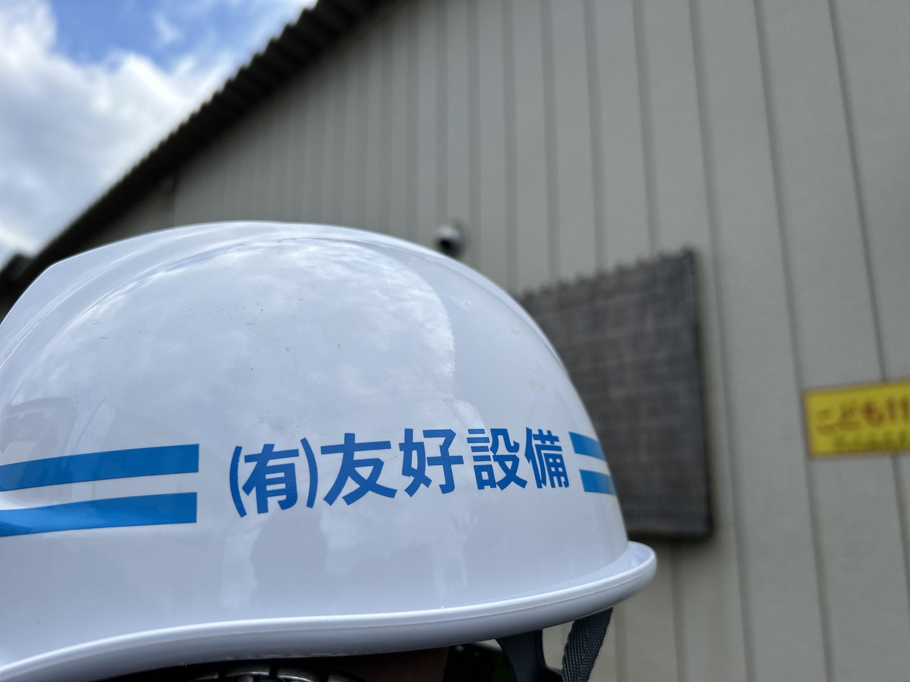

01
01
い
土木工事
道路・河川・宅地造成など、街の骨格をつくる仕事。45年の経験で培った段取り力で、規模を問わず確実に進めます。
大型公共工事から戸建住宅地の造成まで、土木工事のあらゆる場面に対応します。地盤調査・図面確認・施工計画・安全管理まで自社で一貫対応。
- 道路改良工事
- 河川・水路工事
- 宅地造成・盛土
- 擁壁工事
- 公共下水道工事
- 外構・エクステリア
Service
友好設備は、土木のしごとを「上流から下流まで」一貫してお引き受けできる5つの領域を備えています。
地面の下から地面の上まで、街の足元を支える総合土木屋です。
01
道路・河川・宅地造成など、街の骨格をつくる仕事。45年の経験で培った段取り力で、規模を問わず確実に進めます。
大型公共工事から戸建住宅地の造成まで、土木工事のあらゆる場面に対応します。地盤調査・図面確認・施工計画・安全管理まで自社で一貫対応。
 02
02
給排水・空調・ガス設備など、建物の血管をつなぐ仕事。配管の継手ひとつから、見えない部分にこそ手を抜きません。
住宅・店舗・公共施設の給排水設備工事を主軸に、配管リフォーム、漏水修繕まで広く対応。1級管工事施工管理技士が常駐し、品質を担保します。

03取水・浄水・配水まで、暮らしを支える水のインフラを整備する仕事。自治体水道局からの信頼ある請負実績。
川口市・近隣自治体の水道施設の新設・改修・維持管理に対応。漏水対策・耐震化など、長期インフラ視点での提案も得意とします。

04足場の組立から基礎工事、運搬まで。現場の最前線で動く頼れる職人集団。
外部足場、内部足場、コンクリート打設のための型枠補強まで、安全と品質を両立した施工で評価されています。
 05
05
アスファルト・コンクリート舗装の自社施工。街の表情を整える、見えやすい仕事。
道路、駐車場、私道、構内通路まで、舗装工事を一貫して対応します。土木工事の延長で同一現場での施工が可能なため、工期短縮・コスト削減につながります。
Flow
電話・フォームよりお気軽に。
担当が現地で工事内容を確認。
図面・仕様より詳細見積を提示。
安全・品質第一で施工します。
検査ののち、お引き渡し。
Achievements
| 年度 | 工事名／発注者 |
|---|---|
| 2025 | 川口市 安行地区 道路改良工事（川口市発注） |
| 2025 | 戸塚安行 アスファルト舗装工事（民間ゼネコン発注） |
| 2024 | 新郷地区 配水管布設替工事（川口市水道局発注） |
| 2024 | 東川口団地 給排水改修工事（管理組合発注） |
| 2023 | 埼玉県東部 河川改修工事（埼玉県発注） |
| 2023 | 川口元郷駅前 公共下水道布設工事（川口市発注） |
| 2022 | 安行原 戸建住宅地造成工事（民間発注） |